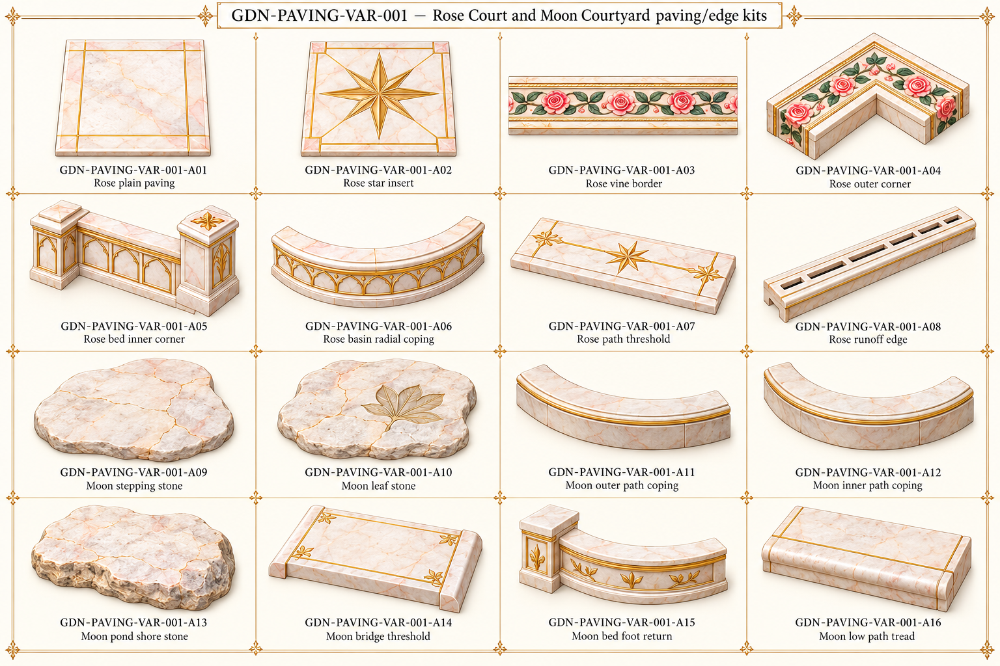

Original source vocabulary

Original palace component references. No accepted models or verified seamless textures/joins.
All active families · Part IDs · Repeat profiles and source/proposed roles

Rose Court formal paving and Moon Courtyard natural path stones stay distinct.
A04 is illustrated as raised edge/coping rather than a certified flush inlay; use as a bed-edge corner or flatten/reconstruct for a floor application. A05 corner turn is a proposed treatment; plan geometry needs review.
Floor flowers/leaf motifs must remain flush when used in walkable paving; source-like shaded relief does not certify height.